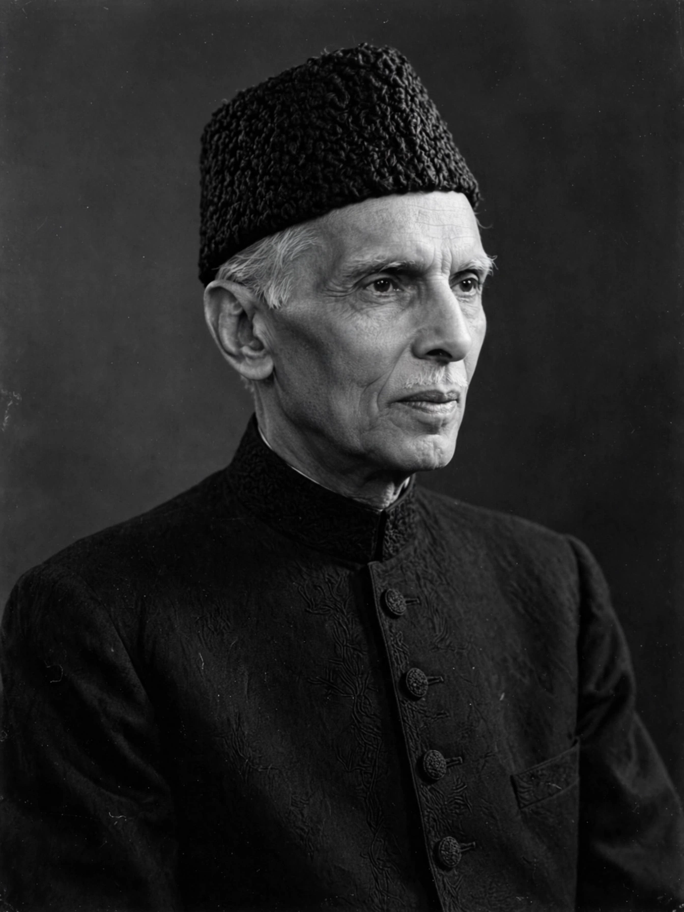

| Muhammad Ali Jinnah | |
|---|---|
| Born | 25 December 1876, Karachi, Bombay Presidency, British India |
| Died | 11 September 1948 (aged 71), Karachi, Pakistan |
| Title | Quaid-e-Azam ("Great Leader"); Founder of Pakistan |
| Office | First Governor-General of Pakistan (1947–48) |
| Party | All-India Muslim League |
| Profession | Barrister |
Muhammad Ali Jinnah (25 December 1876 – 11 September 1948) was a barrister and politician who founded Pakistan and served as its first Governor-General from independence in August 1947 until his death. In Pakistan he is honored as Quaid-e-Azam ("Great Leader") and Baba-e-Qaum ("Father of the Nation").
Jinnah was born in Karachi to a prosperous Gujarati Muslim merchant family. He studied law at Lincoln's Inn in London, becoming the youngest Indian called to the English bar, and built a successful legal practice in Bombay. Entering politics with the Indian National Congress, he was admired as an "ambassador of Hindu-Muslim unity" — he brokered the Lucknow Pact of 1916 between Congress and the Muslim League, aligning the two organizations' demands.
Jinnah broke with Congress over Gandhi's non-cooperation campaign, which he opposed as unconstitutional mass politics, and spent time in London before returning to lead the All-India Muslim League. Alarmed by Congress rule in the provinces after the 1937 elections and by what he saw as Hindu majoritarianism, he propounded the two-nation theory: Muslims and Hindus of the subcontinent were two separate nations entitled to separate states. The Lahore Resolution of 1940 made this demand the League's program.
In the 1946 elections the League won the overwhelming majority of Muslim seats, strengthening Jinnah's claim to speak for Indian Muslims. After failed attempts at a united federal India, the British accepted partition; on 14 August 1947 Pakistan came into being, and Jinnah became its Governor-General in Karachi. In his address to the Constituent Assembly on 11 August 1947 he envisioned a state where citizens were free to practice their religions and equal before the law.
Already gravely ill with tuberculosis — a fact he kept secret — Jinnah died in Karachi on 11 September 1948, barely a year after independence. His mausoleum, Mazar-e-Quaid, is a national symbol of Pakistan.
See also: Indian independence movement, Pakistan movement, Partition of India